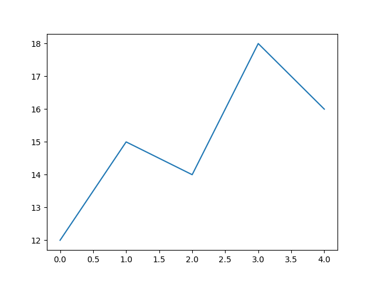
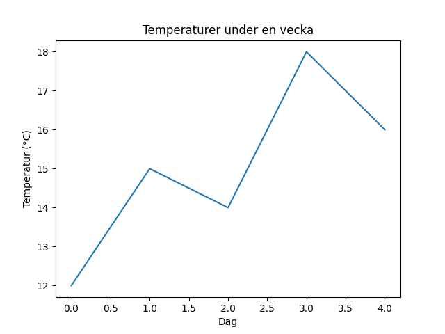
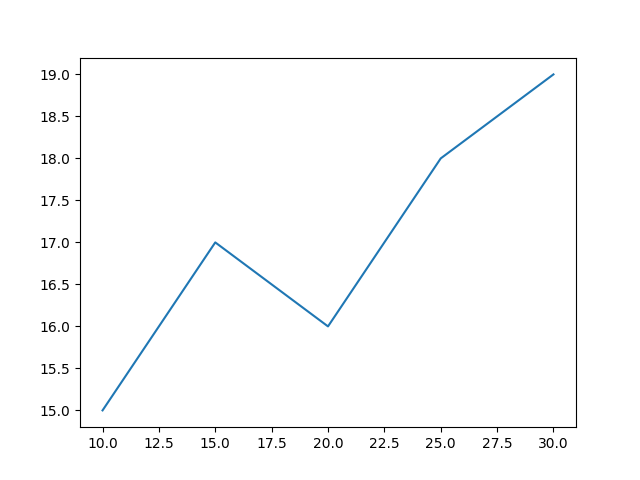
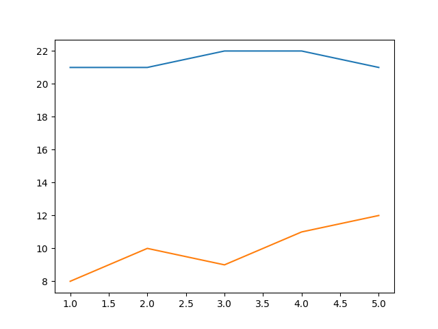
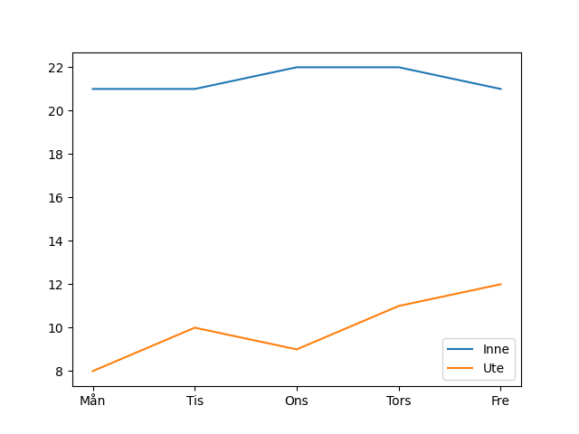
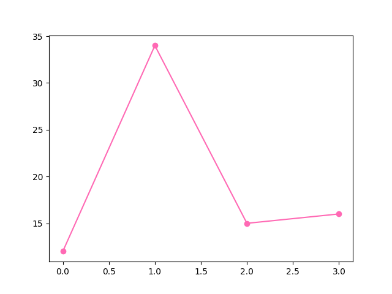
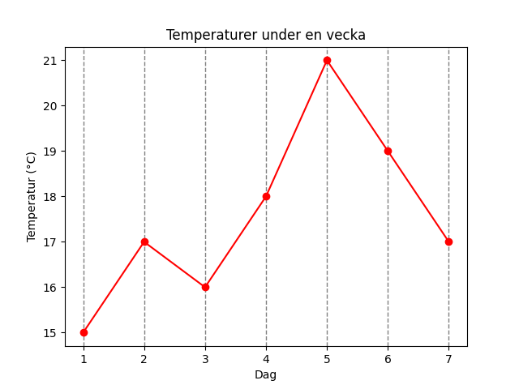
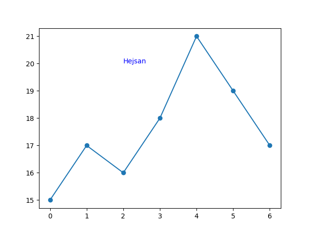
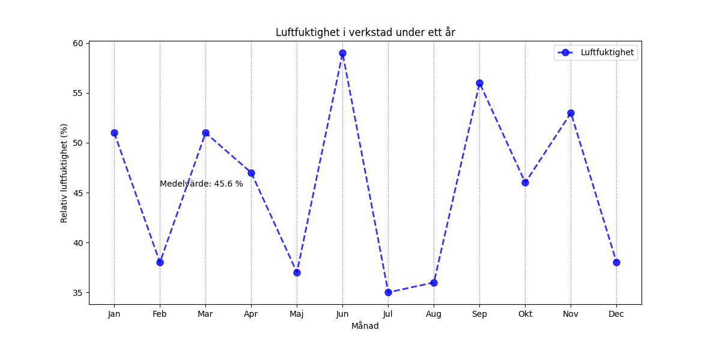

Lektion 5¶
En styrka med Python är att det finns många olika resurser som man kan importera och använda.
Här används modulen random för att få fram slumpade tal och biblioteket matplotlib för att rita grafer. matplotlib behöver installeras, men random finns redan i Python från början
Installera matplotlib¶
Kör följande kommando i din Terminal-app, precis som när du installerade python från början.
python -m pip install -U matplotlib
Valfritt, kontroll, om man har framgångsrikt installerat biblioteket kan man se det tillgängligt via följande kommando i kommandotolken.
Om du vill kontrollera
Om du vill kolla att installationen fungerande kan man exempelvis lista alla moduler man har installerade via:
python -m pip list
Eller använda kommandot show för att visa bara matplotlib:
python -m pip show matplotlib
Introduktion till matplotlib¶
Kommer främst fokusera på linjediagram, går även att rita andra diagram.
Ditt första diagram¶
För att matplotlib ska fungera behöver man i sin källkod importera biblioteket, via import.
Matplotlib ritar ut data från listor, i nedanstående exempel listan matvarden.
import matplotlib.pyplot as plt # Denna rad behövs!
lista = [12, 15, 14, 18, 16]
plt.plot(lista)
plt.show()

Titel och etiketter¶
Man kan lägga till titel och axelrubriker via title, xlabel och ylabel, notera att plt.show() ska vara sist.
plt.plot(lista)
plt.title("Temperaturer under en vecka")
plt.xlabel("Dag")
plt.ylabel("Temperatur (°C)")
plt.show()

Ändra x-axeln¶
Det går att fixa x-axeln genom att skicka in en egen lista för den, nu blir exempelvis x-värdet 30 motsvarande y-värdet 19.
x_axel = [10, 15, 20, 25, 30]
temperaturer = [15, 17, 16, 18, 19]
plt.plot(x_axel, temperaturer)
plt.show()
Det går också att skicka in en lista med text, t.ex. mån, tis, ons...

Flera grafer i samma diagram¶
Det går bra att rita ut flera grafer i samma plot.
dagar = [1, 2, 3, 4, 5]
inne = [21, 21, 22, 22, 21]
ute = [8, 10, 9, 11, 12]
plt.plot(dagar, inne)
plt.plot(dagar, ute)
plt.show()

Förklaringar¶
Om man gör det kanske man vill skriva ut förklaringar, det görs med hjälp av label och legend().
dagar = ["Mån", "Tis", "Ons", "Tors", "Fre"]
inne = [21, 21, 22, 22, 21]
ute = [8, 10, 9, 11, 12]
plt.plot(dagar, inne, label="Inne")
plt.plot(dagar, ute, label="Ute")
plt.legend()
plt.show()

Färger och stil¶
Det finns många färg och stilalternativ för att ändra utseendet på grafen.
Exempelvis linjefärg och markering för datapunkterna:
temperaturer = [12, 34, 15, 16]
plt.plot(temperaturer, color="hotpink", marker="o")
plt.show()

Matplotlib stödjer massa färger på flera olika sätt, man kan scrolla ner lite här och se en lista. https://matplotlib.org/stable/gallery/color/named_colors.html
Det finns även galet många olika markers man kan använda, se lista på matplotlibs hemsida: https://matplotlib.org/stable/api/markers_api.html
Fler argument till plot()
Bonus, finns massa fler argument till plot(), se exempel:
dagar = [1, 2, 3, 4, 5, 6, 7]
temperaturer = [15, 17, 16, 18, 21, 19, 17]
plt.plot(
dagar,
temperaturer,
color="red",
marker="o",
linestyle="--",
linewidth=5,
markersize=20,
label="Temperatur",
alpha=0.3
)
plt.title("Temperaturer under en vecka")
plt.xlabel("Dag")
plt.ylabel("Temperatur (°C)")
plt.legend()
plt.show()
Ändra rutnätet med grid()¶
Funktionen grid() kan användas för att ändra hur rutnätet bakom grafen ser ut.
dagar = [1, 2, 3, 4, 5, 6, 7]
temperaturer = [15, 17, 16, 18, 21, 19, 17]
plt.plot(dagar, temperaturer, color="red", marker="o")
plt.title("Temperaturer under en vecka")
plt.xlabel("Dag")
plt.ylabel("Temperatur (°C)")
plt.grid(axis="x", color="gray", linestyle="--", linewidth=1)
plt.show()

Skriv text i diagrammet¶
Man kan skriva text i diagramytan med hjälp av funktionen text(), enligt: plt.text(x, y, "din text").
Nedanstående exempel skriver ut texten "Hejsan" med start på punkten (2,20) i koordinatsystemet.
temperaturer = [15, 17, 16, 18, 21, 19, 17]
plt.plot(temperaturer, marker="o")
plt.text(2, 20, "Hejsan", color="blue")
plt.show()

Peka ut en punkt med annotate()
Om du vill markera en viss punkt i grafen kan du använda annotate().
annotate() liknar text(), men kan också rita en pil till en punkt.
import matplotlib.pyplot as plt
temperaturer = [15, 17, 16, 18, 21, 19, 17]
plt.plot(temperaturer, marker="o")
plt.title("Temperaturer under en vecka")
plt.xlabel("Dag")
plt.ylabel("Temperatur (°C)")
plt.grid()
plt.annotate(
"Högsta värdet",
xy=(4, 21),
xytext=(2, 22),
arrowprops=dict(arrowstyle="->")
)
plt.show()
Förklaring:
xy=(4, 21)är punkten vi vill peka utxytext=(2, 22)är platsen där texten ska ståarrowprops=...gör att en pil ritas mellan texten och punkten
Övrigt¶
Andra diagramtyper¶
plt.plot() används för linjediagram.
Det finns också andra typer av diagram i matplotlib, till exempel:
plt.bar()för stapeldiagramplt.scatter()för punktdiagramplt.hist()för histogram
Resurser¶
Det finns väldigt mycket man kan göra med matplotlib, och det här avsnittet täcker inte i närheten av allt, tips på mer läsning:
- Officiell dokumentation, https://matplotlib.org/stable/
- Guide på W3C, https://www.w3schools.com/python/matplotlib_intro.asp
Slumptal¶
Om man vill generera lite slumpade tal som man kan rita ut i sin graf.
Behöver importera modulen random, högst upp i källkoden, precis som för matplotlib tidigare.
import random
Slumpa ett tal¶
Kan göras med randint(), tänk "random integer", alltså "slumpat heltal".
slumpat_tal = random.randint(1, 6)
print(slumpat_tal)
Kan ge 1, 2, 3, 4, 5 eller 6. Ja, 6 räknas med här, till skillnad från range().
Fyll en lista med slumpade tal¶
Använder en loop för att fylla en lista med slumpade tal, varje varv i loopen läggs ett tal till på listan.
lista = []
for i in range(10):
slumpat_tal = random.randint(10, 30)
lista.append(slumpat_tal)
print(lista)
Ger utskrift av en lista med 10 st slumpade tal mellan 10 och 30.
Random bonus¶
Inlämning 5¶
Du ska skriva ett program och lämna in via classroom. Du ska lämna in en fil som heter förnamn_efternamn_inl_5.py. Överst i filen ska du skriva följande info:
Överst i filen ska du skriva följande info:
# Namn: XXXX YYYY
# Klass: NATE25
Programmet ska simulera den relativa luftfuktigheten i en verkstad, uppmätt en gång i månaden under ett år. Luftfuktigheten kan variera mellan 30 och 60 %.
Ditt program ska:
-
Skapa en lista med 12 slumpade mätvärden, heltal, mellan 30 och 60.
-
Rita ut en graf baserat på den slumpade mätdatan.
- Grafen ska ha en x-axel med årets månader.
- Grafen ska ha axelrubriker och titel.
- Grafen ska vara snygg (alltså du ska formatera grafen lite som du känner för).
-
Beräkna och skriva ut, på bilden, den genomsnittliga luftfuktigheten. Alltså medelvärdet.
Notera att medelvärdet ska skrivas ut på rätt höjd, om medelvärdet är 40, så ska också texten vara på y-koordinat 40.
Stilkrav:
- Använd beskrivande variabelnamn, t.ex.
temperaturer,antal_ogiltiga,minsta,storsta. - Ha minst en beskrivande kommentar som delar upp/förtydligar vad som händer, exempelvis # Rimlighetskontroll
Testkörning¶
Såhär skulle det kunna se ut när man kör programmet, dina formuleringar kan självklart vara annorlunda.
